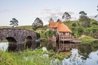
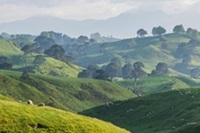
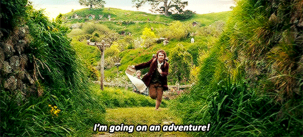

Hobbit Köye Hoşgeldin
Hobbit köyde küçük ama bir o kadarda gururlu, işgüzar, cesaretli bir
halk yaşamaktadır
Join
Gallery
Baggins
Baggins'ler Shire halkıdır. Güneşin üçüncü çağından itibren,
orta dünyda nam salmışlardır. En ünlüleri, macera peşinde
ordan oraya seyahet eden Bilbo Baggins'dir.
Daha Fazla
Baggins
Baggins'ler Shire halkıdır. Güneşin üçüncü çağından itibren,
orta dünyda nam salmışlardır. En ünlüleri, macera peşinde
ordan oraya seyahet eden Bilbo Baggins'dir.
Daha Fazla

Baggins
Baggins'ler Shire halkıdır. Güneşin üçüncü çağından itibren,
orta dünyda nam salmışlardır. En ünlüleri, macera peşinde
ordan oraya seyahet eden Bilbo Baggins'dir.
Daha Fazla

Baggins
Baggins'ler Shire halkıdır. Güneşin üçüncü çağından itibren,
orta dünyda nam salmışlardır. En ünlüleri, macera peşinde
ordan oraya seyahet eden Bilbo Baggins'dir.
Daha Fazla
Tours
Hobbiton Movie Set (Hobbiton Film Seti), Yeni Zelanda’nın kuzey
ucundaki Waikato bölgesinde, Matamata kasabasına yaklaşık 15 km.
mesafede bulunuyor. Buraya yakın çevre illerden otobüs ile
gelebiliyorsunuz. Köyün Auckland şehrine uzaklığı ise araba ile
yaklaşık 2 saat. Konum ve harita için
tıklayın.
Hobbiton Köyü ziyareti için önceden rezervasyon yaptırmak önemli.
Çünkü bazı dönemler oldukça yoğunluk yaşanıyor ve aynı gün bilet
bulamayabilirsiniz. Bilet fiyatları biraz yüksek ama eğer
Türkiye’den kalkıp Yeni Zelanda’ya kadar gittiyseniz, bu para
çerez parası sayılır zaten. O yüzden mutlaka ziyaret etmenizi
öneririz.

About Us
Orta Dünya’nın kaderini değiştiren, Karanlıklar Efendisi Sauron’un
kayıp Tek Yüzük’ünü bulan ve yok eden Hobbitler kimdir? Diğer
ırklardan onları ayırt eden özellikleri nelerdir? Soyları kimlere
dayanır? Siyahi bir hobbit olabilir mi? Nerede ve nasıl yaşarlar? Ve
en çok bilinen Hobbitler kimlerdir? Gandalf Hobbitlerle alakalı hep
şöyle der: “Hobbitler gerçekten ilginç yaratıklar. Onlarla ilgili
öğrenilecek ne varsa bir ay içinde öğrenebilirsin, ama bir bakarsın
yüz yıl sonra bir darlık anında seni gene de şaşırtıvermişler.”
Buçukluklar olarak da bilinen Hobbitler, genellikle toprağın altında
yaşayan ufak bir ırktır. Yüzük Savaşı dışında Orta Dünya tarihinde
çok az rol oynarlar. Orta Dünya’daki varlıkları pek bilinmezken,
Bilbo ve varisi Frodo’nun zamanında aniden, kendi istekleri dışında
hem önemli hem de ünlü oluverip Ariflerin ve Uluların aklını
karıştırırlar.